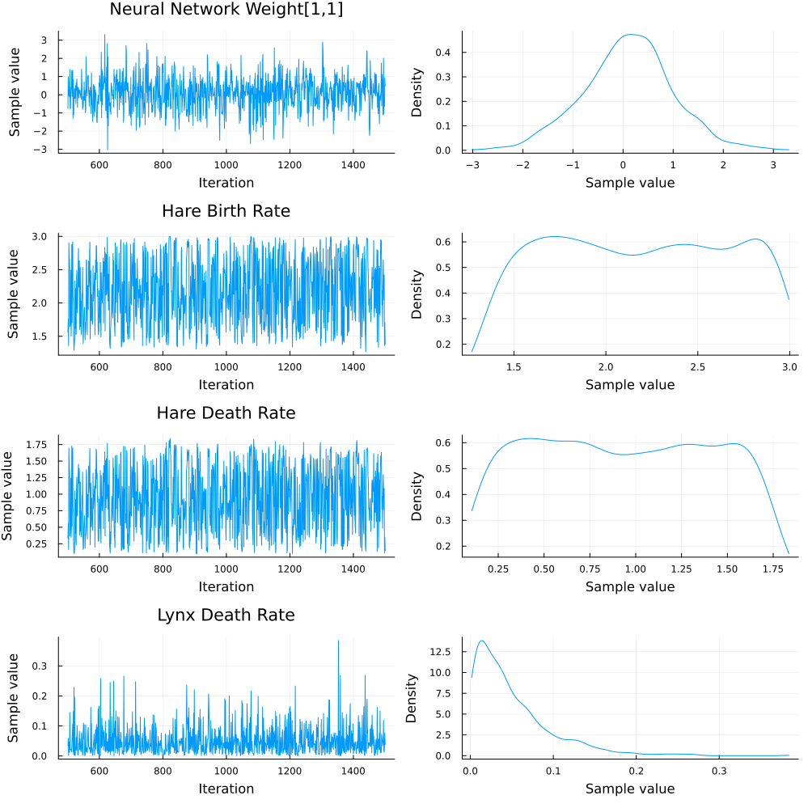

Bayesian inference with MCSamplingBackend
This tutorial demonstrates Bayesian inference for a hybrid autoregressive model of the classic hare-lynx predator-prey system, where the predation interaction is learned via neural networks while maintaining mechanistic constraints for birth and death processes. Uncertainty quantification is performed using Markov Chain Monte Carlo sampling.
The train function provided by HybridDynamicModels is an experimental feature, exposed for demonstration purposes. Users are encouraged to implement their own train function to gain more control over the training process; see Overloading the train function. A relevant utility function to build custom training pipelines in a Bayesian inference context is create_turing_model.
Importing necessary packages
In order to use the MCSamplingBackend, we'll need to manually load Lux, Turing, and ComponentArrays. We additionally load Distributions, Plots, StatsPlots, DataFrames, DelimitedFiles, and HTTP for defining priors, data handling and visualization.
using Lux, Distributions, Turing, ComponentArrays
using HybridDynamicModels
using Random
using Plots, StatsPlots
using DataFrames, DelimitedFiles, HTTP
const luxtype = Lux.f64f64 (generic function with 1 method)Data loading
Load the Lynx-Hare population dataset:
url = "http://people.whitman.edu/~hundledr/courses/M250F03/LynxHare.txt"
data = readdlm(IOBuffer(HTTP.get(url).body), ' ') |> luxtype
df_data = DataFrame(Year = data[:, 1], Hare = data[:, 2], Lynx = data[:, 3])
# Visualize observed data (hare and lynx)
plt_data = plot(df_data.Year, df_data.Hare, label = "Hare", xlabel = "Year",
ylabel = "Population", title = "")
plot!(plt_data, df_data.Year, df_data.Lynx, label = "Lynx")
display(plt_data)Data preparation
Prepare training and test datasets:
tsteps = Vector(df_data.Year)
# Extract hare and lynx data
hare_lynx_data = Array(df_data[:, Not(:Year)])' |> luxtype
hare_lynx_data ./= maximum(hare_lynx_data)
# Data array: [hare, lynx]
data_array = hare_lynx_data |> luxtype
forecast_length = 10
test_idx = size(data_array, 2) - forecast_length + 1:size(data_array, 2)
data_array_train = data_array[:, Not(test_idx)]
tsteps_train = tsteps[Not(test_idx)]
# Create training dataloader
dataloader_train = SegmentedTimeSeries(
(data_array_train, tsteps_train);
segment_length = 4, shift = 3, partial_segment = true)SegmentedTimeSeries
Time series length: 81
Segment length: 4
Shift: 3 (25.0% overlap)
Batch size: 1
Total segments: 27
Total batches: 27Model definition
Define a hare-lynx predator-prey model where the predation interaction is learned via neural networks, while birth and death processes follow mechanistic rules:
# Neural network for hare-lynx predation interactions
hlsize = 2^2
neural_interactions = Chain(Dense(2, hlsize, relu),
Dense(hlsize, 1, relu)) # Output: predation rate, enforce non-negativity
# Bayesian ecological parameters with Uniform priors using same bounds as SGD constraints
mechanistic_priors = (
hare_birth = Uniform(0.1, 3.0),
hare_death = Uniform(0.1, 3.0),
lynx_death = Uniform(1e-3, 2.0)
)
# Priors for neural network weights
neural_priors = Normal(0.0, 1.0) # Prior for neural network weights
# Hybrid ecosystem dynamics
function ecosystem_step(layers, u, ps, t)
hare, lynx = max.(u, 0.) # Unpack state variables
params = layers.mechanistic_params(ps.mechanistic_params)
# Neural network: predation rate
predation_input = [hare, lynx]
predation_rate = layers.neural_interactions(predation_input, ps.neural_interactions)[1]
# Mechanistic hare dynamics
hare_birth = params.hare_birth[1] * hare
hare_predation = -predation_rate * hare * lynx
hare_natural_death = -params.hare_death[1] * hare
# Mechanistic lynx dynamics
lynx_predation_gain = predation_rate * hare * lynx # Lynx gain from predation
lynx_death = -params.lynx_death[1] * lynx
# Return derivatives
return [
hare_birth + hare_predation + hare_natural_death, # Hare
lynx_predation_gain + lynx_death # Lynx
]
end
# Create Bayesian autoregressive model
model = ARModel(
(neural_interactions = BayesianLayer(neural_interactions, neural_priors),
mechanistic_params = BayesianLayer(ParameterLayer(), mechanistic_priors)),
ecosystem_step;
dt = tsteps[2] - tsteps[1],
)ARModel(
neural_interactions = BayesianLayer(
layers = Chain(
layer_1 = Dense(2 => 4, relu), # 12 parameters
layer_2 = Dense(4 => 1, relu), # 5 parameters
),
),
mechanistic_params = BayesianLayer(
layers = ParameterLayer{NoConstraint, HybridDynamicModels.var"#42#4
4"{@NamedTuple{}}, HybridDynamicModels.var"#43#45"{@NamedTuple{constraint::
@NamedTuple{}}}}(NoConstraint(), HybridDynamicModels.var"#42#44"{@NamedTupl
e{}}(NamedTuple()), HybridDynamicModels.var"#43#45"{@NamedTuple{constraint:
:@NamedTuple{}}}((constraint = NamedTuple(),))),
),
) # Total: 17 parameters,
# plus 0 states.Training configuration
Configure Bayesian inference with MCMC sampling. We assume a Normal likelihood for the observed data with a fixed standard deviation.
# MCMC sampler
sampler = NUTS(0.65) # No-U-Turn Sampler
# Likelihood distribution
data_distrib = x -> Normal(x, 0.2)
rng = MersenneTwister(42) # For reproducibility
# Training backend configuration
backend = MCSamplingBackend(
sampler, # MCMC sampler
1000, # Number of MCMC samples
data_distrib; # Likelihood distribution
rng
)HybridDynamicModelsTuringExt.MCSamplingBackend(NUTS{AutoForwardDiff{nothing
, Nothing}, AdvancedHMC.DiagEuclideanMetric}(-1, 0.65, 10, 1000.0, 0.0, Aut
oForwardDiff()), 1000, Main.var"##WeaveSandBox#513".var"#1#2"(), Base.Pairs
{Symbol, MersenneTwister, Tuple{Symbol}, @NamedTuple{rng::MersenneTwister}}
(:rng => MersenneTwister(42)))Training
Train the model with Bayesian inference without inferring initial conditions (to reduce computation time for this example):
@info "Starting Bayesian training..."
result = train(backend, model, dataloader_train, InferICs(false));Starting Bayesian training...
Found initial step size
ϵ = 0.05Results analysis
Analyze MCMC chains and posterior distributions:
# Extract MCMC chains
chains = result.chains
@info "MCMC Summary:"
display(chains)MCMC Summary:
Chains MCMC chain (1000×34×1 Array{Float64, 3}):
Iterations = 501:1:1500
Number of chains = 1
Samples per chain = 1000
Wall duration = 202.35 seconds
Compute duration = 202.35 seconds
parameters = model_neural_interactions_layer_1_weight[1, 1], model_n
eural_interactions_layer_1_weight[2, 1], model_neural_interactions_layer_1_
weight[3, 1], model_neural_interactions_layer_1_weight[4, 1], model_neural_
interactions_layer_1_weight[1, 2], model_neural_interactions_layer_1_weight
[2, 2], model_neural_interactions_layer_1_weight[3, 2], model_neural_intera
ctions_layer_1_weight[4, 2], model_neural_interactions_layer_1_bias[1], mod
el_neural_interactions_layer_1_bias[2], model_neural_interactions_layer_1_b
ias[3], model_neural_interactions_layer_1_bias[4], model_neural_interaction
s_layer_2_weight[1, 1], model_neural_interactions_layer_2_weight[1, 2], mod
el_neural_interactions_layer_2_weight[1, 3], model_neural_interactions_laye
r_2_weight[1, 4], model_neural_interactions_layer_2_bias[1], model_mechanis
tic_params_hare_birth, model_mechanistic_params_hare_death, model_mechanist
ic_params_lynx_death
internals = n_steps, is_accept, acceptance_rate, log_density, hamil
tonian_energy, hamiltonian_energy_error, max_hamiltonian_energy_error, tree
_depth, numerical_error, step_size, nom_step_size, lp, logprior, loglikelih
ood
Use `describe(chains)` for summary statistics and quantiles.We plot the posterior distributions of key parameters:
# Plot parameter traces
trace_plot = plot(chains[["model_neural_interactions_layer_1_weight[1, 1]",
"model_mechanistic_params_hare_birth",
"model_mechanistic_params_hare_death",
"model_mechanistic_params_lynx_death"]], title="Parameter Traces")
plot!(trace_plot[1, 1], title = "Neural Network Weight[1,1]")
plot!(trace_plot[2, 1], title = "Hare Birth Rate")
plot!(trace_plot[3, 1], title = "Hare Death Rate")
plot!(trace_plot[4, 1], title = "Lynx Death Rate")
[plot!(trace_plot[i, 2], title = "") for i in 1:4]
display(trace_plot)
Forecasting with uncertainty
Forecast on test data with uncertainty quantification. For this, we use
# Function for forecasting with uncertainty
function forecast_with_uncertainty(model, chains, tsteps_test, u0, t0, n_samples)
forecasts = []
posterior_samples = sample(model, chains, n_samples)
for i in 1:n_samples
pred, _ = model((; u0 = u0, tspan = (t0, tsteps_test[end]), saveat = tsteps_test),
posterior_samples[i], result.st_model.st.model)
push!(forecasts, pred)
end
return forecasts
end
tsteps_test = tsteps[test_idx]
data_test = data_array[:, test_idx]
t0 = result.ics[end].t0
tsteps_last_segment = tsteps_train[tsteps_train .>= t0]
data_last_segment = data_array_train[:, tsteps_train .>= t0]
u0 = data_array[:, findfirst(==(t0), tsteps)] # Initial condition at t0
tsteps_pred = union(tsteps_last_segment, tsteps_test)
forecast_predictions = forecast_with_uncertainty(model, chains, tsteps_pred, u0, t0, 100)
# Plot forecast with uncertainty
forecast_plot = plot(title="Bayesian forecast", xlabel="Year", ylabel="Population", legend=:topright)
# Training data (last part)
hare_color = "#ffd166"
lynx_color = "#ef476f"
# Test data
scatter!(forecast_plot, tsteps_last_segment, data_last_segment[1, :],
label="Hare Train", color=hare_color, markershape=:circle, markersize=4, alpha=0.7)
scatter!(forecast_plot, tsteps_last_segment, data_last_segment[2, :],
label="Lynx Train", color=lynx_color, markershape=:circle, markersize=4, alpha=0.7)
scatter!(forecast_plot, tsteps_test, data_test[1, :],
label="Hare Test", color=hare_color, markershape=:diamond, markersize=6, alpha=0.7)
scatter!(forecast_plot, tsteps_test, data_test[2, :],
label="Lynx Test", color=lynx_color, markershape=:diamond, markersize=6, alpha=0.7)
# Forecast uncertainty
for i in 1:length(forecast_predictions)
plot!(forecast_plot, tsteps_pred, forecast_predictions[i][1, :],
color=hare_color, alpha=0.1, label=i==1 ? "Hare predicted" : "")
plot!(forecast_plot, tsteps_pred, forecast_predictions[i][2, :],
color=lynx_color, alpha=0.1, label=i==1 ? "Lynx predicted" : "")
end
display(forecast_plot)